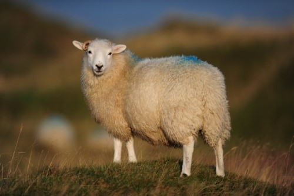
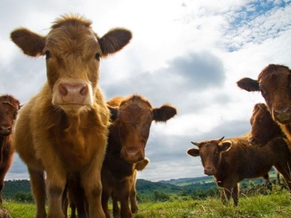

Sheep

Sheep commonly graze (eat grass) in fields in the Peak District, kept by farmers for their wool and sometimes for meat.
Mountain hare

The mountain hares brown coat turns white over winter so it is hidden in snow from its predators
Cows

Lots of cows are farmed in the Peak District, from shaggy Highland cattle to the traditional black and white cows. They graze in farmers’ fields, kept for milk and beef.